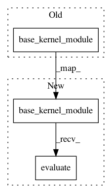

d9069391dc7dfe7cf383815a439f478917eafa63,gpytorch/kernels/inducing_point_kernel.py,InducingPointKernel,_get_covariance,#InducingPointKernel#Any#Any#,63
Before Change
return res
def _get_covariance(self, x1, x2):
k_ux1 = self.base_kernel_module(x1, self.inducing_points)
if torch.equal(x1, x2):
covar = RootLazyVariable(k_ux1.matmul(self._inducing_inv_root))
else:
k_ux2 = self.base_kernel_module(x2, self.inducing_points)
After Change
return res
def _get_covariance(self, x1, x2):
k_ux1 = self.base_kernel_module(x1, self.inducing_points).evaluate()
if torch.equal(x1, x2):
covar = RootLazyVariable(k_ux1.matmul(self._inducing_inv_root))
else:
k_ux2 = self.base_kernel_module(x2, self.inducing_points).evaluate()
In pattern: SUPERPATTERN
Frequency: 3
Non-data size: 3
Instances
Project Name: cornellius-gp/gpytorch
Commit Name: d9069391dc7dfe7cf383815a439f478917eafa63
Time: 2018-05-27
Author: jrg365@cornell.edu
File Name: gpytorch/kernels/inducing_point_kernel.py
Class Name: InducingPointKernel
Method Name: _get_covariance
Project Name: cornellius-gp/gpytorch
Commit Name: d9069391dc7dfe7cf383815a439f478917eafa63
Time: 2018-05-27
Author: jrg365@cornell.edu
File Name: gpytorch/kernels/grid_kernel.py
Class Name: GridKernel
Method Name: forward
Project Name: cornellius-gp/gpytorch
Commit Name: d9069391dc7dfe7cf383815a439f478917eafa63
Time: 2018-05-27
Author: jrg365@cornell.edu
File Name: gpytorch/kernels/inducing_point_kernel.py
Class Name: InducingPointKernel
Method Name: _inducing_mat